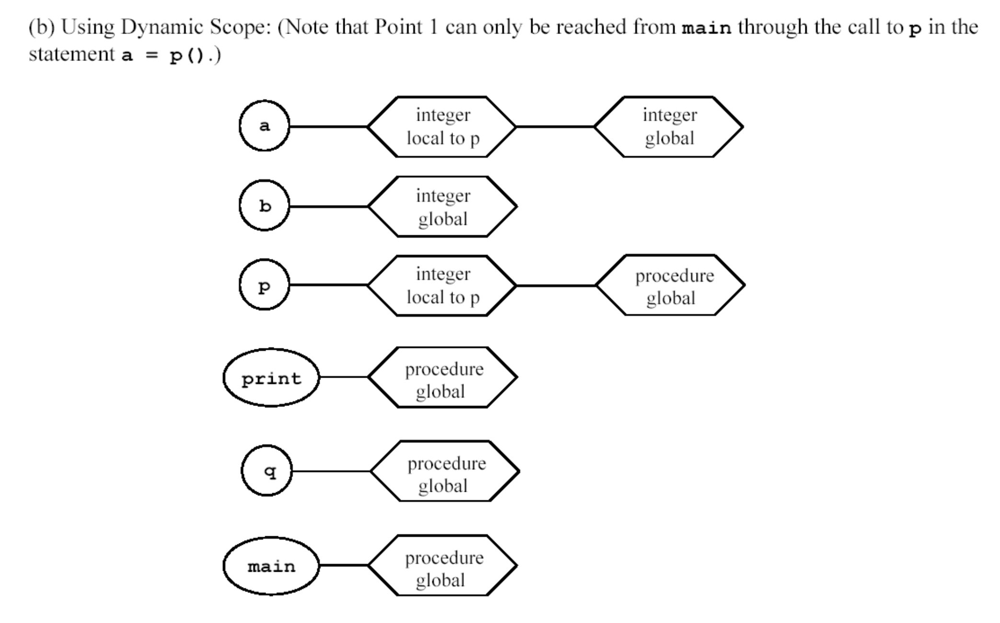

Homework Assignment 7
Read: Finish chapter 5 and chapter 6
Purpose: Review computer architecture and how it relates to the design
of HOL (higher order languages) and semantics of HOL. Review problems
with operators that also have side effect. Understand the
difference between static scoping and dynamic scoping. Understand
type equivalence. Identify some non-compatible features of C/C++.
- What is specification of IEEE 754?
- This problem pertains to floating arithmetic and its
implementation using code in the "C" language. I have written a simple C
program
( hw6F03.c
). There is a makefile if you want to use it. ( hw7Q2.zip
)
- Compile and run this code using GCC.(either using cygwin or Sun
work stations)
- One would expect that the Part 1A and Part 1B (part1()) of
program would compute and print the same value for sum.
(Remember C does not have a boolean it uses 0 to mean false
and all other values to mean true.) Does it execute as expected?
- One would also expect that adding ten times the value 0.1 would
result in 1.0. Explain why (how) the computer gets the results
for part
2 (part2()) ?
- (Page 133 Harbison & Steele) "Prior to standard C, all
implementations were required to convert all values of type float
to type double before operations were performed. ... In
standard C, operations can now be performed using type float ."
What is the consequences of this change? ( Consider speed,
accuracy, and the effect of decisions made in selection of types used
by programmer)
- Convert this code(in question 3) to Java. (This code can
just be implemented as static methods.)
- Execute this code and compare results you obtained in problem
3? If the results are the same--Do you always expect the results
always to be the same -- explain. If the results are different explain
why.
- What does the keyword strictfp in mean?
- Compile and run the code with the keyword strictfp .
Compare these results with the results in part 3a (Java
only). Explain your results.
- What is the difference between macros (in C) and functions
(in C).
Explain in terms of the concept of binding.
- In Ansi C the keyword static has two different
semantics depending on where it is used, either inside a function
definition or outside of a function definition. What does static
mean in both settings?
- Page 181 exercise 5.8.
- This is the simple symbol table using lexical scoping at
point 1. You need to do it for points 2 and 3 as well as what is
printed using lexical scoping.

- This is the simple symbol table using dynamic scoping at
point 1. You need to do it for points 2 and 3 as well as what is
printed using dynamic scoping.
- 
- page 251 exercise 6.6.
- page 251 exercise 6.7
- page 253 exercise 6.15 ( Hint: What is the typical allocated size
of bool vs int? What if instead of assigning x.i=20000 before you
assigned x.b=true, you assigned x.i=0 before x.b=true? )
- page 251 exercise 6.18
- page 251 exercise 6.19
- page 254 exercise 6.22
- Give an examples that shows the semantics of "const" in C is
different than its semantics in C++.